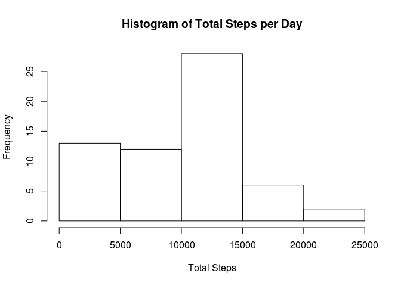
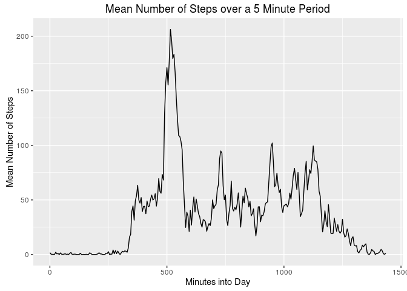
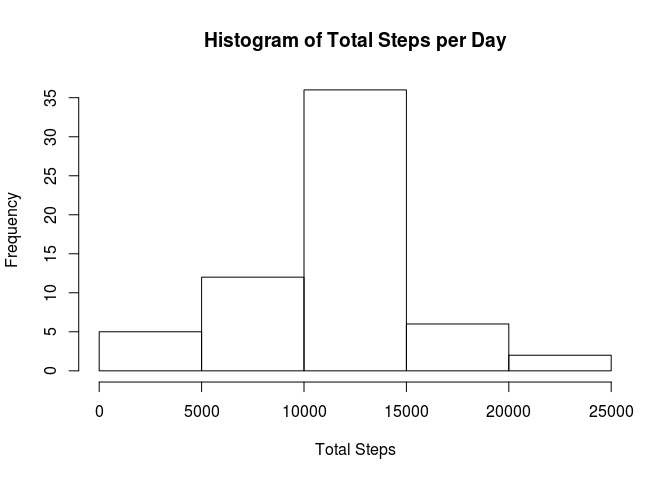
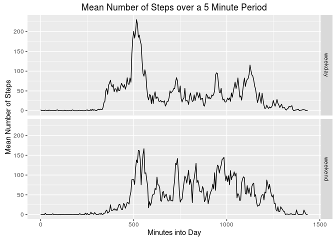

Show any code that is needed to:
library(dplyr)
library(lubridate)
library(stringr)
library(ggplot2)
### 1 ###
# read the data
data <- read.csv(unz('activity.zip', 'activity.csv'))
### 2 ###
# convert the date to a date format
data$date <- ymd(data$date)
# modify the interval column to represent "number of minutes elapsed so far today"
# this is required to correct the scale since the least significant digits range 0-59 instead of 0-99
# a time variable is added to help with interpretability (I couldn't figure out a good way to use it directly)
data$interval <- str_pad(data$interval, 4, pad = "0")
data$time <- paste0(substr(data$interval, 1, 2), ':', substr(data$interval, 3, 4))
data$interval <- as.numeric(substr(data$interval, 1, 2)) * 60 + as.numeric(substr(data$interval, 3, 4))For this part of the assignment, you can ignore the missing values in the dataset.
### 1 ###
StepsPerDay <- data %>%
group_by(date) %>%
summarize(total_steps = sum(steps, na.rm = TRUE))
### 2 ###
hist(StepsPerDay$total_steps, main = 'Histogram of Total Steps per Day', xlab = 'Total Steps')
### 3 ###
summary(StepsPerDay$total_steps)## Min. 1st Qu. Median Mean 3rd Qu. Max.
## 0 6778 10400 9354 12810 21190The mean total steps per day can be seen above as: 9354
### 1 ###
StepsPerTime <- data %>%
group_by(interval, time) %>%
summarize(mean_steps = mean(steps, na.rm = TRUE))
ggplot(data = StepsPerTime, aes(x = interval, y = mean_steps)) +
geom_line() +
labs(title = 'Mean Number of Steps over a 5 Minute Period', x = 'Minutes into Day', y = 'Mean Number of Steps')
### 2 ###
subset(StepsPerTime, mean_steps == max(StepsPerTime$mean_steps, na.rm = TRUE))## Source: local data frame [1 x 3]
## Groups: interval [1]
##
## interval time mean_steps
## (dbl) (chr) (dbl)
## 1 515 08:35 206.1698It can be seen above that there is a peak of activity in the morning, with highest activity found at 08:35 (24 hour time format).
Note that there are a number of days/intervals where there are missing values (coded as NA). The presence of missing days may introduce bias into some calculations or summaries of the data.
### 1 ###
sum(is.na(data$steps))## [1] 2304mean(is.na(data$steps))## [1] 0.1311475### 2 ###
# my strategy for imputation is to replace a missing value with the average from that interval
# this average is already calculated previously in the StepsPerTime data frame
data_impute <- data %>%
merge(StepsPerTime) %>%
mutate(steps = ifelse(is.na(steps), mean_steps, steps)) %>%
select(steps, date, interval, time)
### 3 ###
StepsPerDay_impute <- data_impute %>%
group_by(date) %>%
summarize(total_steps = sum(steps, na.rm = TRUE))
### 4 ###
hist(StepsPerDay_impute$total_steps, main = 'Histogram of Total Steps per Day', xlab = 'Total Steps')
summary(StepsPerDay_impute$total_steps)## Min. 1st Qu. Median Mean 3rd Qu. Max.
## 41 9819 10770 10770 12810 21190The new histogram shows shifting of the data towards higher daily total step counts. This is to be expected since each day’s step count should be greater than or equal to the pre-imputation amount. Evidence of this increase can be seen with the new mean of 10770 and new median of 10770, both of which are higher than the pre-imputation values.
For this part the weekdays() function may be of some help here. Use the dataset with the filled-in missing values for this part.
### 1 ###
weekdays <- data_impute %>%
mutate(day = is.element(weekdays(date), c('Saturday', 'Sunday'))) %>%
mutate(day = ifelse(day, 'weekend', 'weekday')) %>%
group_by(interval, time, day) %>%
summarize(mean_steps = mean(steps, na.rm = TRUE))
### 2 ###
ggplot(data = weekdays, aes(x = interval, y = mean_steps)) +
facet_grid(day ~ .) +
geom_line() +
labs(title = 'Mean Number of Steps over a 5 Minute Period', x = 'Minutes into Day', y = 'Mean Number of Steps')
Several interesting patterns are evident at a glance. You can notice that activity is delayed on weekends, consistent with a possible explanation that the subject is sleeping in. While morning activity is lower on weekends, activity is displayed at a higher rate throughout the rest of the day, suggesting that the subject’s hobbies are more active than their regular weekday job. Finally, you can see activity is sustained longer on the weekends, indicating the subject is more likely to stay up late.